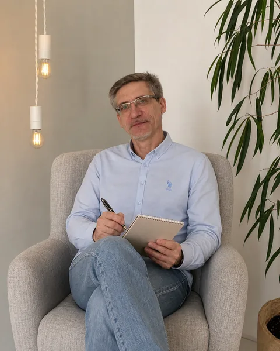

Эмоциональное выгорание и потеря себя: как вернуть гармонию
Почему мы выгораем, какие внутренние барьеры мешают остановиться и шесть практических шагов, чтобы бережно вернуться к себе.
Психолог · онлайн и очно в Екатеринбурге
Я — Павел Макарцов, психолог с классическим образованием и знанием современных методик. Работаю в когнитивно-поведенческом подходе со взрослыми, подростками и семьями — бережно, конфиденциально и с понятным результатом.

Когда мы уже не в состоянии изменить ситуацию, мы сталкиваемся с необходимостью изменить себя.
С чем я помогаю
Не обязательно точно знать, «что со мной». Достаточно чувствовать, что так, как сейчас, жить тяжело, — вместе мы разберёмся, что происходит и что с этим делать.
Постоянное напряжение, беспокойные мысли, трудно расслабиться и уснуть.
Нет сил и радости, работа и забота о других вытеснили собственные желания.
Внутренний критик, неуверенность, сложно говорить «нет» и отстаивать границы.
Откладываете важное, боитесь ошибиться, всё должно быть идеально.
Конфликты с партнёром или близкими, одиночество, повторяющиеся сценарии.
Утрата, развод, переезд, смена работы, растерянность и поиск себя.
Перепады настроения, замкнутость, трудности в школе и со сверстниками.
Как понять ребёнка, выстроить контакт и поддержать его, не теряя себя.
Обо мне
Я окончил с отличием Московский педагогический государственный университет имени В.И. Ленина по специальности «Педагогика и психология», а в 2026 году — магистратуру по психологии в Уральском федеральном университете, тоже с отличием.
Больше десяти лет я руководил отделами продаж и филиалами крупных компаний. Выгорание, перфекционизм, высокая ответственность и желание всё держать под контролем знакомы мне изнутри. Вернувшись в психологию, я работал и в школе, поэтому хорошо понимаю, что переживают подростки и их родители.
Мне 57 лет, больше 35 из них я счастлив в браке, у нас двое взрослых детей. Этот опыт тоже помогает мне понимать людей — их страхи, кризисы и стремление к гармонии.
Подробнее обо мнеКогнитивно-поведенческая терапия — один из самых изученных и эффективных подходов при тревоге, сниженном настроении и выгорании.
Классическое образование и нейрокогнитивная диагностика помогают увидеть картину целиком и выбрать решение под вас.
Всё, что вы рассказываете, остаётся между нами. Без оценок, нотаций и давления — в вашем темпе.
Не только разговор: понятные шаги и навыки, которые можно применять в жизни между встречами.
Услуги
Поддержка при стрессе, кризисах, трудностях в отношениях и в личностном росте. Индивидуально, в паре или с семьёй.
от 3 000 ₽ / 50 минут
ПодробнееШкольные и семейные трудности, тревожность, общение со сверстниками, самооценка. Консультации для родителей.
3 000 ₽ / 50 минут
ПодробнееГотовность к школе и комплексная диагностика перед ПМПК с использованием нейропсихологических методов — с письменным заключением и рекомендациями.
3 000 ₽ / 50 минут
ПодробнееКак проходит работа
Позвоните, напишите в Telegram или оставьте заявку на сайте — я отвечу, и мы подберём удобное время.
Знакомимся, обсуждаем, что беспокоит, и чего вы хотите достичь. Можно прийти без чёткого запроса.
Вместе определяем цели, частоту встреч и формат. Вы всегда можете их изменить.
Осваиваем практические навыки и отслеживаем прогресс, пока вы не почувствуете устойчивую опору.
Зачем обращаться к психологу
Иногда чувства, мысли и поступки кажутся запутанными. Психолог помогает взглянуть на себя со стороны, разобраться в мотивах, услышать свои настоящие желания и научиться принимать себя.
Если вы переживаете кризис, утрату, растерянность, тревогу, выгорание или сложные отношения, вместе мы найдём путь, который будет поддерживающим и посильным именно для вас.
Психологическая работа помогает выйти из повторяющихся сценариев, выстроить границы, повысить самооценку и обрести больше уверенности и внутренней опоры.
Образование
Для меня важно, чтобы вы знали, к кому обращаетесь. Сканы дипломов, удостоверений и сертификатов выложены на сайте в открытом доступе.
Смотреть документыУральский федеральный университет им. Б.Н. Ельцина
Уральский федеральный университет
УрФУ, МГППУ, Институт развития образования, центр «Ладо» — 6 программ повышения квалификации
Московский педагогический государственный университет им. В.И. Ленина
Библиотека поддержки
Почему мы выгораем, какие внутренние барьеры мешают остановиться и шесть практических шагов, чтобы бережно вернуться к себе.
Практика «Осознание собственных приоритетов»: три шага, которые помогают услышать свои потребности и научиться говорить «нет».
Напишите пару слов о том, что беспокоит, — я отвечу, предложу удобное время и формат: онлайн или очно в Екатеринбурге.